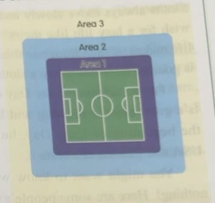
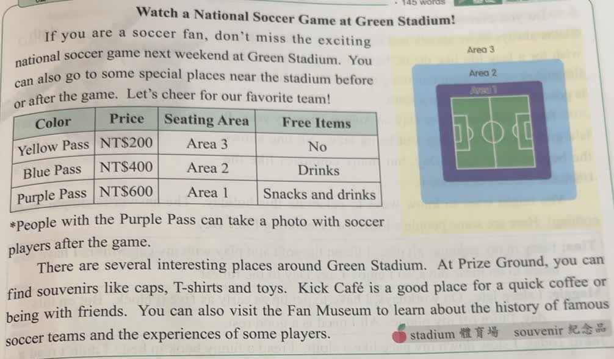
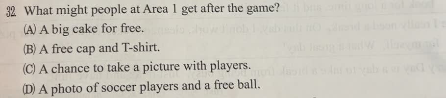

分享原卷｜第 32 題
完整原題
作答所需文章／材料
Watch a National Soccer Game at Green Stadium! If you are a soccer fan, don’t miss the exciting national soccer game next weekend at Green Stadium. You can also go to some special places near the stadium before or after the game. Let’s cheer for our favorite team! People with the Purple Pass can take a photo with soccer players after the game. There are several interesting places around Green Stadium. At Prize Ground, you can find souvenirs like caps, T-shirts and toys. Kick Café is a good place for a quick coffee or being with friends. You can also visit the Fan Museum to learn about the history of famous soccer teams and the experiences of some players. 字詞：stadium 體育場；souvenir 紀念品。| Color | Price | Seating Area | Free Items |
|---|---|---|---|
| Yellow Pass | NT$200 | Area 3 | No |
| Blue Pass | NT$400 | Area 2 | Drinks |
| Purple Pass | NT$600 | Area 1 | Snacks and drinks |

What might people at Area 1 get after the game?
(A) A big cake for free.
(B) A free cap and T-shirt.
(C) A chance to take a picture with players.
(D) A photo of soccer players and a free ball.
先想一想，再查看答案、解說與原圖
原卷作答：D
正確答案：C。表格指出 Area 1 對應 Purple Pass，註記說紫票持有人可在賽後與球員合照。
逐項解析
| 選項與原句 | 判讀 | 句意與判斷理由 |
|---|---|---|
| (A) A big cake for free. | 不選 | 文章沒有提供免費大蛋糕的資訊。 |
| (B) A free cap and T-shirt. | 不選 | 帽子、T恤是周邊紀念品，文中沒有說免費贈送。 |
| (C) A chance to take a picture with players. | 應選 | 表格指出 Area 1 對應 Purple Pass，註記說紫票持有人可在賽後與球員合照。 |
| (D) A photo of soccer players and a free ball. | 不選 | 文中說與球員合照，並沒有贈送免費足球；球員的照片也不等於與球員合照。 |
詳細說明與解題步驟
一、先把區域對應票種
Area 1 在表格中對應 Purple Pass。不要把 Area 1、Area 2 的待遇混在一起。
二、找 after the game
表格下方註記直接寫：People with the Purple Pass can take a photo with soccer players after the game. 因此賽後可「和球員一起拍照」，選 C。
三、分清 of 和 with
A photo of soccer players 是「球員的照片」；take a picture with players 是「與球員合照」。原卷選 D，除了混淆照片的意思，還加入文中沒有的免費足球。
票價、點心和飲料也應依表格讀取，不能自行加上大蛋糕、帽子或T恤等未說明的贈品。
核對註記：已核對題幹、全部選項與必要材料；教材對應課次未確認，歸綜合。
原圖（僅本題）

